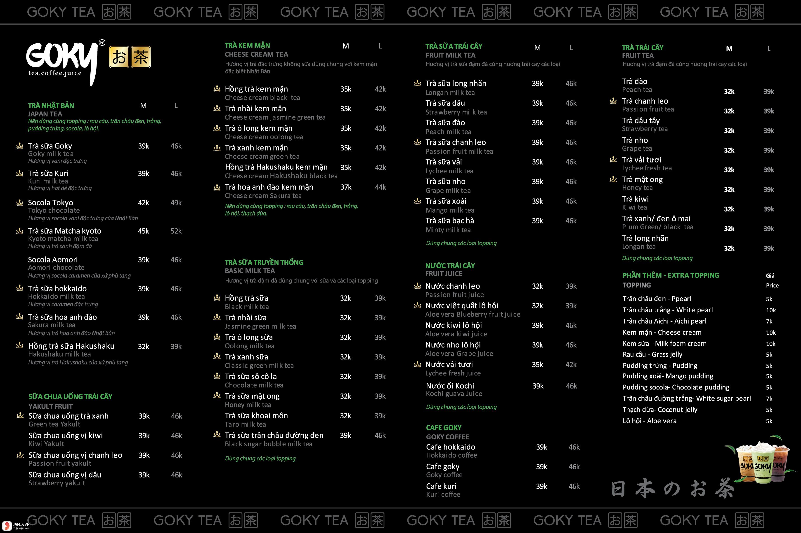

Menu gồm

1. Trà Nhật Bản (8 vị)
Bao gồm: Trà sữa Goky – Trà sữa Kuri – Socola Tokyo – Trà sữa Match Kyoto – Socola Aomori – Trà sữa Hokaido – Trà sữa Hoa Anh Đào – Hồng trà sữa Hakushaku
2. Sữa chua uống trái cây (4 vị)
Bao gồm: Sữa chua uống trà xanh – Sữa chua uống vị kiwi – Sữa chua uống vị chanh leo – Sữa chua uống vị dâu
3. Trà kem mặn (6 vị)
Bao gồm: Hồng trà kem mặn – Trà nhài kem mặn – Trà xanh kem mặn – Hồng trà Hakushaku kem mặn – Trà hoa anh đào kem mặn
4 Trà sữa truyền thống (8 vị)
Bao gồm: Hồng trà sữa – Trà nhài sữa – Trà ô long sữa – Trà xanh sữa – Trà sữa socola – Trà sữa mật ong – Trà sữa khoai môn – Trà sữa trân châu đường đen
5 Trà sữa trái cây (8 vị)
Bao gồm: Trà sữa long nhãn – Trà sữa dâu – Trà sữa đào – Trà sữa chanh leo – Trà sữa vải – Trà sữa nho – Trà sữa xoài – Trà sữa bạc hà
6 Nước trái cây (6 vị)
Bao gồm: Nước chanh leo – Nước việt quất lô hội – Nước kiwi lô hội – Nước nho lô hội – Nước vải tươi – Nước ổi kochi
7 Café Goky (3 vị)
Bao gồm: Café Hokkaido – Café Goky – Café Kuri
8 Trà trái cây (9 vị)
Bao gồm: Trà đào – Trà chanh leo – Trà chanh dây – Trà nho – Trà vải tươi – Trà mật ong – Trà kiwi – Trà xanh / đen ô mai – Trà long nhãn
9 Các loại Topping dùng thêm (12 loại)
Bao gồm: Trân châu đen – Trân châu trắng – Trân châu Aichi – Kem mặn – Kem sữa – kem câu – Pudding trứng – Pudding xoài – pudding socola – Trân châu đường trắng – Thạch dừa – Lô hội
Như vậy là trong trà sữa Goky Menu có đến 52 hương vị khác nhau, cộng thêm với đó là 12 loại topping cực kỳ ngon và bắt mắt. Và điều vô cùng đặc biệt nữa là tất cả những hương vị trà sữa Goky ở trên đều mang nét đặc trưng từ Nhật Bản, không lẫn đi đâu được ngay ở cái tên. Chính vì điều đó mà người ta còn hay gọi Goky với một cái tên khác, đó chính là trà sữa Goky Nhật Bản